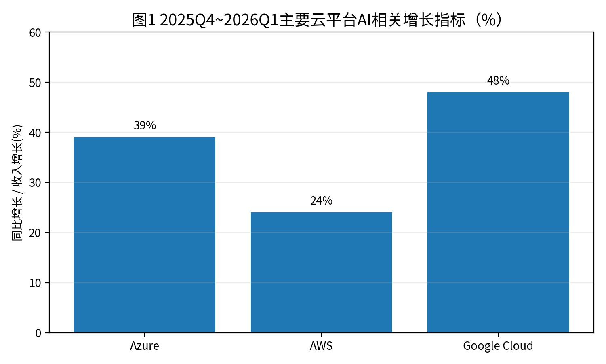
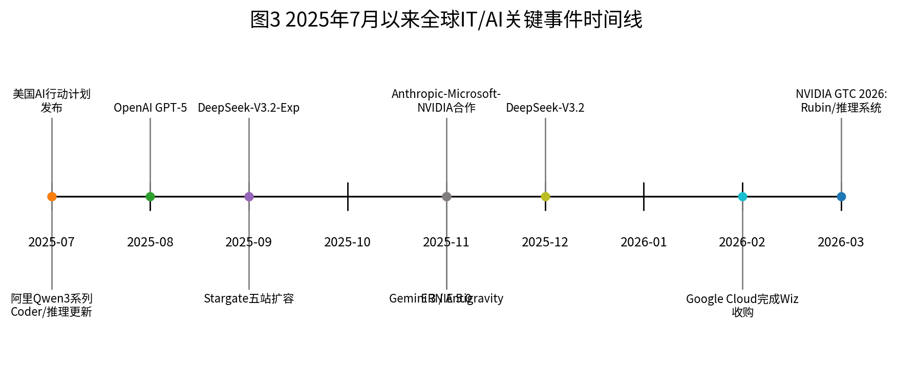
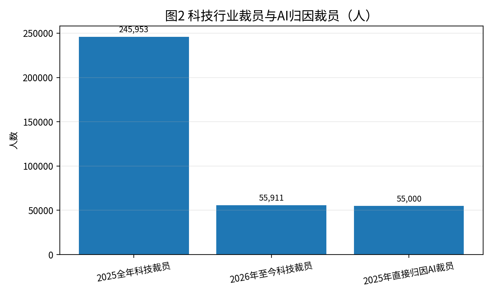

系统性行业调研报告（截至2026年3月）
面向企业决策者、开发者与投资人
作者：公众号:AI观象录 - 宋子鹏
| 研究范围 | 全球IT、软件开发、云计算与人工智能产业 |
| 时间范围 | 2025年7月—2026年3月（以公开信息为准） |
| 方法论 | 官方公告、财报、监管文件、产业媒体与综合推断 |
自2025年7月以来，全球IT与AI产业已从“模型能力竞赛”进入“能力—成本—工作流—组织重构”四维同时演进的新阶段。以GPT-5、Claude 4/4.5、Gemini 3、DeepSeek-V3.2和Qwen 3.5为代表的新一代模型，正在把竞争中心从单轮问答，转向长链路推理、工具调用、多模态理解、代码代理与企业可控部署。
宏观上看，企业IT支出并未因宏观不确定性显著收缩，反而在AI基础设施驱动下继续扩张。Gartner预计2026年全球IT支出将达6.15万亿美元，同比增长10.8%；服务器、云平台、数据平台与安全预算成为最主要增量池。云厂商财报进一步证明：AI已经不是“讲故事”的需求，而是直接体现在Azure、AWS、Google Cloud的收入和资本开支曲线上。
技术层面，2025年下半年最大的变化有三点：第一，前沿模型普遍引入“混合推理/按需思考”机制，在速度、成本和质量之间动态路由；第二，AI coding从补全式Copilot升级为可提交PR、可跑测试、可修改多文件仓库的Agent；第三，推理优化成为新的基础设施主战场，训练不再是唯一瓶颈，推理吞吐、上下文成本、内存带宽和电力约束成为商业化上限。
市场格局上，美国仍在闭源前沿模型、云平台与GPU生态上保持主导；中国则在开源模型、低成本推理、场景化落地和工程效率上快速追赶，DeepSeek、阿里Qwen、百度ERNIE等形成了鲜明的“高性价比开源+产业嵌入”路线；欧洲与中东则更多围绕合规、主权云和本地算力节点布局。
组织层面，科技企业开始把“AI优先”从口号变成预算和人力制度。2025年全年科技行业裁员约24.6万人，2026年至今已超过5.5万人；更关键的是，岗位并非简单消失，而是被重新定义为‘AI管理者、验证者、集成者、流程设计者’。程序员、测试、客服、运营与分析岗位的初级重复性工作被明显压缩，中高级岗位则向架构、审核、数据治理和工具编排倾斜。
从未来1-3年看，行业大概率不会进入平台期，而是处于“扩散加速期”。最值得关注的方向包括：企业级Agent平台、AI-native SaaS、面向真实工作流的代码代理、推理基础设施优化、主权AI与行业专用模型、以及围绕安全/审计/治理的新一代软件栈。
2024年市场更关注AI是否会侵蚀既有软件预算，而到了2025年下半年，问题已转为“企业如何重排预算顺序”。当前趋势并非全面加总预算，而是预算结构迁移：传统应用维护、低价值定制开发、部分外包与通用席位软件增长放缓；与AI直接相关的云算力、数据治理、向量/检索层、安全、应用集成与工作流自动化预算则明显上升。
这一变化可以从云厂商业绩直观看到。微软2026财年Q2披露Azure及其他云服务收入同比增长39%；亚马逊2025年Q4披露AWS季度收入同比增长24%至356亿美元；Alphabet 2025年Q4披露Google Cloud收入同比增长48%，并表示Google Cloud在2025年底的年化收入运行率已超过700亿美元。三者共同说明：AI不只是附着在云上的新功能，而正在成为拉动云增速重新抬升的主引擎。
从软件层面看，SaaS正在出现“双层化”趋势：一层是传统记录系统（system of record），例如ERP、CRM、HRIS，继续承担数据与流程沉淀；另一层是智能执行系统（system of action），即以大模型+工具调用为核心、直接执行查询、生成、审批、分析和协作动作的Agent层。未来SaaS的护城河将更少依赖界面与工作流模板，而更多取决于数据权限、集成深度、行业语义与可验证执行能力。

图1 主要云平台最新披露的AI相关增长指标。数据口径分别来自微软、亚马逊与Alphabet公开财报/业绩说明。
2023-2024年的AI coding主要是代码补全、问答和局部重写；进入2025H2后，主流厂商都在推动更高自治等级的代码代理。GitHub Copilot coding agent可以接受Issue并在后台运行，最终以PR形式提交结果；Google Jules可直接理解代码仓库并执行写测试、修Bug、升级依赖等任务；Anthropic则围绕Claude Code构建企业级开发新工作流。软件工程的最小生产单位，正从‘开发者+IDE’转变为‘开发者+多代理编排环境’。
这种变化带来的并非简单“更快写代码”，而是软件交付链条的重构：需求描述更结构化，代码生成更批量化，测试与回归更自动化，评审与审计更重要，发布流程更倾向在CI/CD与沙箱中完成。开发者的价值重心随之从纯编码时间，转向问题拆解、约束定义、代码审查、系统架构和生产事故判断。
OpenAI于2025年8月发布GPT-5，将快速响应模型、深度推理模型与实时路由整合为统一系统。官方称其在AIME 2025、SWE-bench Verified、MMMU与HealthBench等指标上达到新的高位，并强调其对编程、长文写作和健康问答的实用提升，同时显著降低幻觉和欺骗性回答概率。
Anthropic在2025年推出Claude 4家族，并在随后继续推进4.1/4.5迭代。Claude Opus 4与Sonnet 4将重点放在长时任务稳定性、代码代理和工具使用上；官方披露Opus 4在SWE-bench 72.5%、Terminal-bench 43.2%，并能连续运行数小时完成复杂编码任务，这使其在代码代理场景中形成鲜明差异化。
Google在2025年从Gemini 2.5推进到Gemini 3。Gemini 2.5 Pro已引入1M token长上下文、Deep Think增强推理、Project Mariner计算机使用能力；Gemini 3则进一步把推理、多模态、搜索连接、Agent与代码平台整合，Google同时推出Antigravity等开发平台，将模型能力直接嵌入开发工具链。
开源阵营方面，阿里在2025年4月开源Qwen3，并于7月发布面向编码、复杂推理与翻译的新Qwen3模型，2026年2月再发布以高效率推理为中心的Qwen3.5；DeepSeek在2025年9月发布V3.2-Exp，引入Sparse Attention以优化长上下文训练和推理效率，12月正式发布面向Agent的DeepSeek-V3.2；百度则在2025年11月发布原生全模态ERNIE 5.0。
| 厂商/模型 | 核心定位 | 关键能力变化 | 生态动作 | 判断 |
|---|---|---|---|---|
| OpenAI / GPT-5 | 统一系统 | 自动路由、强推理、低幻觉、强代码与健康能力 | ChatGPT、API、Codex、企业Frontier平台 | 继续占据闭源前沿高地，但成本与生态开放度仍受关注 |
| Anthropic / Claude 4.x | 代码代理 | 长时任务稳定、工具调用、企业级Claude Code | Accenture、Microsoft Foundry、Cognizant | 在软件工程与代理执行上势能最强 |
| Google / Gemini 2.5-3 | 全栈一体化 | 1M上下文、Deep Think、搜索与多模态融合 | Search、Cloud、Workspace、Antigravity | 最有能力把模型红利导入自有产品矩阵 |
| Alibaba / Qwen3-3.5 | 开源高性价比 | 混合推理、编码、视觉、多尺寸部署 | 阿里云、终端设备、IOC场景 | 开源+产业嵌入路线竞争力突出 |
| DeepSeek / V3.2 | 推理效率 | Sparse Attention、Agent导向、低价部署 | API与开源社区传播 | 对全球价格体系形成压力 |
多模态方面，行业已从“图片识别+文本回答”的弱多模态，转向统一表示下的文档、界面、视频、音频和空间关系理解。Gemini 3 Pro和ERNIE 5.0都明确强调文档/视频/空间理解；Qwen3.5则将视觉推理、长视频与前端代码生成打包为生产效率特征。
Agent方面，竞争点从‘是否支持function calling’演化为‘能否稳定完成多步、跨工具、长时任务’。一个成熟Agent不仅要会调用工具，还要会做任务分解、状态记忆、错误恢复、结果验证和权限边界处理。Anthropic、OpenAI、Google都已把代理能力嵌入企业产品与开发平台中。
长上下文方面，1M token已不再是营销标签，而是实际连接大型代码库、长文档与会议记录的工作底座。但真正的门槛不在于“能装下多少”，而在于长上下文下的有效检索、注意力稀疏化、成本控制与事实稳定性。DeepSeek对Sparse Attention的推进，反映出行业正在用算法工程而非单纯堆算力解决此类问题。
推理能力方面，2025H2后前沿模型普遍提供可开关的思考模式或预算控制，这意味着‘推理’正被产品化为一个成本/时延可配置项。企业可根据任务价值选择更长推理、更低延迟或更低成本档位，模型正在像云计算资源一样被分层定价。
闭源模型仍然在最前沿推理、产品可用性、安全栈和企业支持上保持优势，尤其适合高价值、复杂、需要强保障的工作流；开源模型则在成本、可控部署、本地化与垂直场景适配方面更具吸引力。
因此未来竞争不会是‘开源替代闭源’的简单叙事，而是形成至少三层结构：第一层，闭源旗舰模型服务最高价值任务；第二层，开源或半开源模型承担批量推理与本地化部署；第三层，企业自研或微调模型用于高合规、高专有数据场景。谁能赢，不只看基准分数，更看TCO、集成、治理与实际交付效率。
2024年市场讨论焦点是‘谁拿到更多GPU’，而2025H2以后，真正主导商业效率的是推理端：每次调用成本、每秒token吞吐、上下文长度下的延迟、缓存命中率、KV内存占用、数据中心供电与冷却约束，正在决定Agent能否大规模进入企业流程。
OpenAI 2025年9月披露Stargate新增五个美国数据中心站点，并称其将使项目更接近在2025年底锁定5000亿美元、10GW算力承诺；Anthropic在2025年11月与微软、NVIDIA达成更深战略合作，并承诺购买300亿美元Azure算力和额外1GW容量；Google则在2026年给出1750亿-1850亿美元CapEx指引。可以说，算力军备竞赛并未结束，只是从‘抢训练卡’扩大到‘抢能源、网络、散热与推理架构’。
在芯片端，NVIDIA 仍然是核心受益者。公司2026财年Q2披露Blackwell数据中心收入环比增长17%；2026年GTC上，Jensen Huang进一步把Blackwell与Rubin到2027年的潜在收入预期上调到至少1万亿美元。这一表述虽然带有战略宣示意味，但至少说明行业预期已把Agent和推理负载视作下一轮算力需求的主要来源。

图3 2025年7月以来关键事件时间线（根据公开公告整理）。
2025年7月：美国发布《America’s AI Action Plan》，核心三大支柱是创新、基础设施与国际外交/安全，整体基调明显偏向加速创新、减少阻碍和强化国家竞争。
2025年8月：OpenAI发布GPT-5，统一原先分散的模型路线，并把‘按需思考’与低幻觉能力作为产品卖点，标志前沿闭源模型进入新一轮迭代。
2025年9月：OpenAI、Oracle、SoftBank宣布Stargate新增五个美国数据中心站点；DeepSeek发布V3.2-Exp，强化长上下文效率；Meta、Google等同步加码政府和主权AI合作。
2025年11月：Google进入Gemini 3周期，推出Antigravity等Agent开发平台；Anthropic与微软、NVIDIA宣布扩大合作；百度在Baidu World发布原生全模态ERNIE 5.0；企业级代理和全模态竞争开始白热化。
2025年12月：DeepSeek正式发布V3.2，明确‘reasoning-first for agents’定位；Google宣布Gemini 3 Deep Think与更广范围的Search/AI Mode落地；OpenAI发布企业AI采用研究报告，表明行业正从试点进入规模化部署。
2026年2月至3月：Google完成对Wiz的收购，意图补强云安全与AI时代的多云防护能力；NVIDIA在GTC 2026强化对Rubin、推理系统和Agent生态的叙事，推理基础设施成为资本市场关注焦点。
OpenAI的核心变化不只是GPT-5本身，而是其商业叙事从模型API转向‘企业AI平台+Agent工作系统’。公司在2025年末披露：超过100万家企业客户直接使用OpenAI，ChatGPT for Work总席位超过700万，ChatGPT Enterprise席位同比增长9倍。与此同时，OpenAI开始强调公司知识（company knowledge）、Codex、Frontier等产品，用意是将模型从聊天入口进一步嵌入真实工作系统。
这意味着OpenAI正在争夺的不是单次API调用，而是企业的AI操作层。如果它能持续掌握前沿模型优势并提供强治理能力，就有机会像过去的云平台一样，成为上层工作流的默认基础设施。
Google的优势在于：芯片（TPU）—模型（Gemini）—云（Google Cloud/Vertex AI）—消费入口（Search/Android/YouTube/Workspace）一体化。2026年财报披露其Gemini App月活已超7.5亿，Gemini Enterprise四个月内售出超过800万付费席位，显示Google正在把模型能力直接渗透进原有庞大分发体系。
与OpenAI和Anthropic相比，Google最特别的地方在于它能够用搜索、浏览器、办公套件和云平台共同训练用户习惯。Gemini 3若能继续在性能和开发者口碑上提升，其长期竞争力可能更多来自分发而非单一模型参数。
微软的战略并不是单独打造“最强模型”，而是成为企业级AI分发与结算的中心枢纽。Azure增长、Microsoft 365 Copilot、GitHub Copilot、Foundry，以及与OpenAI/Anthropic/NVIDIA的连接，让微软成为最能把模型能力迅速货币化的厂商之一。
值得注意的是，Anthropic已将Claude模型接入Microsoft Foundry和Microsoft 365 Copilot生态，这说明微软越来越像AI时代的“多模型云OS”。只要客户仍然在Azure、M365与GitHub里工作，微软就能从无论哪家模型的消费中受益。
Amazon的路径是以AWS为中心，提供更广的模型市场和基础设施服务，利用Bedrock、Trainium/Inferentia与AWS原有企业关系吸收推理需求；短期看其优势在于基础设施覆盖和企业客户基盘，挑战在于上层应用生态的叙事弱于微软和Google。
Meta在Llama开源路线上的战略价值，仍在于把模型变成社交、广告、硬件和政府场景的通用基础层。其问题在于，开源虽然能扩大生态影响力，但未必天然转化为高毛利软件收入；Meta需要在终端、广告与代理入口上建立可持续商业闭环。
NVIDIA的地位已从‘卖卡’升级为定义AI数据中心架构。随着推理成为主战场，NVIDIA不仅要守住训练优势，还要在网络、机架、软件栈、推理系统与企业Agent基础设施上继续向上延伸。
美国仍然主导前沿闭源模型、超大规模云平台与GPU生态，因此在高端能力和资本密度上占优；中国在开源模型、推理效率、成本控制、本地化与政府/产业场景渗透方面竞争力迅速上升；欧洲则更强调合规、主权云与行业规则，商业节奏相对稳健但速度偏慢；中东和部分亚洲国家则以资金、能源和主权算力节点参与全球AI基础设施竞争。
未来区域竞争的本质不是谁拥有‘唯一最好模型’，而是谁能同时拥有足够好的模型、足够低的推理成本、足够强的本地数据/合规能力，以及足够大的分发场景。
2025年下半年以来，科技行业裁员呈现两个新特征。其一，裁员不再只与宏观经济或疫情后纠偏相关，而越来越多与AI引发的组织重构绑定。TrueUp统计显示，2025年科技行业共有783起裁员、影响245,953人；2026年至今已超过55,900人。CBS援引Challenger, Gray & Christmas的数据称，2025年公司直接将约55,000个岗位裁撤归因于AI，其中约51,000个位于科技行业。
其二，岗位替代与岗位重构同时发生。最先受到影响的是可模板化、规则明确、重复性高的工作：基础客服、初级内容生产、人工QA回归测试、简单数据分析、标准化文档整理、低复杂度前后端开发等。与此同时，新的岗位需求向‘模型评估与红队、安全与治理、AI产品运营、Agent工作流设计、数据工程与知识库治理、技术审计和Prompt/Tool编排’迁移。
值得警惕的是，组织裁员常常并非AI直接替代劳动，而是企业利用AI契机同步完成效率整顿、管理层级压缩和预算重分配。因此，‘AI导致裁员’与‘AI成为裁员叙事’在现实中往往并存。

图2 科技行业裁员与AI归因裁员。前两项来自TrueUp，AI归因裁员来自Challenger/CBS转引。
Shopify在2025年把“先证明AI不能完成，再申请新增人力”公开化，象征管理逻辑已经变化：新增岗位要先与AI效率比较，而不是与历史编制比较。
Duolingo与Klarna在AI-first表述上都经历了市场和舆论反弹，说明纯粹以‘AI替代人’叙事推动组织转型，会在用户体验、品牌和质量控制上引发副作用。Klarna重新增加人工客服配置，恰恰表明当AI进入真实业务后，人机协同而非单边替代更接近稳态。
Anthropic与Accenture则代表另一条路径：不是简单裁掉人，而是围绕Claude Code重塑软件开发流程、衡量ROI并配套培训。这类模式更可能成为大企业AI转型的主流模板。
AI Coding已经从‘提高个人编码速度’升级为‘重写整个软件交付过程’。最直观的变化有四个：第一，需求表达从自然语言闲聊转向半结构化任务单与验收标准；第二，编码从人写机辅变成人审机写；第三，测试从发布前检查变为开发全过程的自动回路；第四，代码评审的价值上升，因为错误更容易被快速、大批量地产生。
“10x工程师”在2025-2026年并未以字面意义普遍出现，但‘10x团队杠杆’正在成为现实。高级工程师借助多个代理，可以同时推进设计、脚手架、测试、迁移和文档；然而收益高度依赖上下文管理、架构判断和评审质量，因此并不存在“人人自动10倍”的平均化结果。
GitLab在2025年报告中提出“AI Paradox”：编码更快后，评审、测试、集成和治理成为新瓶颈；其调研称组织每位成员每周会因AI相关低效损失约7小时，85%受访者认为平台工程对释放生产力至关重要。这个发现非常关键，它说明AI不会自动消灭软件工程流程，反而要求更强的平台化和工程纪律。
从需求→开发→测试→上线的链条看，未来最优实践很可能是：产品经理把需求转为结构化规格；架构师定义边界、数据契约和风险；代码代理负责生成/修改多文件代码并补充测试；CI代理负责运行与修复；人类工程师负责审查关键逻辑、安全与上线决策。
2025H2以来，AI商业化的核心从‘谁的模型更强’转向‘谁能把AI嵌入可计费的工作流’。这导致行业出现两个明显信号：一是企业软件预算开始围绕生产力与自动化回报重新分配；二是模型厂商纷纷推出更靠近工作系统的产品，而不是只卖API调用。
OpenAI的企业研究显示，75%的企业员工认为AI提升了速度或质量，重度用户每周可节省超过10小时；OpenAI同时披露超过100万家企业客户、700万以上工作席位，说明从试点到规模化部署已经发生。Anthropic则通过与Cognizant、Accenture、微软的合作，把Claude Code直接打包进咨询交付和大型企业工程体系，目的不是卖单模型订阅，而是切入预算更大的数字化改造项目。
金融：最成熟的方向是投研辅助、客服质检、合规检索、文档起草和内部知识问答。ROI通常来自人均处理量提升和错误率下降，而非完全替代高价值决策岗位。
医疗：价值集中在临床文书、患者沟通、药研知识整合与运营自动化。由于监管与责任要求更高，医疗行业更倾向‘AI辅助+人工复核’模式，短期内不适合全自动闭环。
教育：生成式内容、个性化练习、语言学习和教务自动化仍是主线，但Duolingo案例提醒市场：AI扩张速度若快于质量控制与师生感知，容易遭遇品牌反噬。
制造：AI最具商业吸引力的并不是通用聊天，而是与工业软件、质检视觉、设备运维、供应链优化和知识管理相结合的嵌入式Agent。这里对多模态、边缘部署和成本控制要求更高，因此开源模型和行业小模型也有较大空间。
软件开发本身：这是ROI最清晰、扩散最快的领域之一。OpenAI称Cisco将Codex引入工程流程后，代码评审时间减少50%，项目周期从数周缩短至数天；Anthropic与Accenture则把软件开发流程重塑与ROI度量绑定，意味着AI coding正在从工具采购变成管理体系工程。
成功案例通常具备四个条件：任务边界清晰、数据可用、结果可验证、流程中保留人工审批节点。换言之，AI越接近结构化且可复核的工作，越容易形成正ROI。
失败案例则多出现在两个场景：一是把AI直接塞进高风险、低容错且缺乏验证机制的核心流程；二是把‘AI替代人’当作短期资本市场叙事，而忽视服务质量、品牌、组织学习和用户体验。
第一，幻觉与可靠性问题仍未消失，只是从‘是否经常犯错’变成‘在复杂任务中偶发但代价极高的错误’。随着Agent开始操作代码库、数据库和办公系统，单次错误的业务损失可能高于传统聊天场景。
第二，安全与权限边界问题更复杂。模型连接企业知识库、邮件、表格、代码库后，提示注入、越权访问、敏感数据泄露与操作审计缺失会变成刚性风险。
第三，法律与版权问题仍在演化。训练数据边界、生成内容归属、模型蒸馏与输出侵权、行业责任认定等问题尚无全球统一答案。
第四，就业市场冲击并非线性。大量初级岗位可能减少入场机会，中高级岗位则因AI提高杠杆而需求升级，这会导致劳动力市场出现‘入口收缩、能力两极化、再培训滞后’的问题。
第五，技术瓶颈已经从模型参数规模转向系统约束：算力供给、HBM与先进封装、数据中心能耗、冷却、水资源、推理成本与高质量数据供给，都可能成为限制AI持续扩散的关键变量。
未来1-3年，行业更可能处于爆发扩散期，而不是平台停滞期。原因在于：模型性能仍在上升；推理成本仍在下降；企业真实工作流正在被逐步打通；组织层面的学习和治理框架也在形成。AI真正的临界点不是出现单个“更强模型”，而是当足够多的企业能够用可控成本把Agent嵌入核心流程。
最值得关注的方向包括：企业Agent平台、面向真实代码库的自治开发代理、AI-native办公/分析/安全软件、主权AI与本地化算力、围绕评估/审计/安全的配套工具链、以及‘自动公司（autonomous company）’雏形——即大量内部流程由模型驱动但受人类治理的组织形态。
[1] OpenAI, Introducing GPT-5, 2025-08-07.
[2] Anthropic, Introducing Claude 4, 2025-05-22.
[3] Google DeepMind, Updates to Gemini 2.5 from Google I/O 2025, 2025-05.
[4] Google, Introducing Gemini 3, 2025-11-18.
[5] Gartner, Worldwide IT Spending to Grow 10.8% in 2026, 2026-02-03.
[6] Microsoft, FY26 Q2 results / Azure revenue growth, 2026-01-28.
[7] Amazon, Q4 2025 results / AWS growth and AI investment, 2026-02-05.
[8] Alphabet, Q4 2025 results / Google Cloud +48%, ARR > $70B, 2026-02-04.
[9] European Commission AI Act Service Desk, EU AI Act implementation timeline.
[10] The White House, America’s AI Action Plan, 2025-07.
[11] OpenAI, Stargate expands with five new data center sites, 2025-09-23.
[12] Anthropic, Microsoft + NVIDIA + Anthropic strategic partnerships, 2025-11-18.
[13] Alibaba Group, Qwen3 models and Qwen3.5 open-source announcements, 2025-07 / 2026-02.
[14] DeepSeek API Docs, DeepSeek-V3.2-Exp and DeepSeek-V3.2 release notes, 2025-09 / 2025-12.
[15] Baidu, ERNIE 5.0 announcement at Baidu World 2025, 2025-11-13.
[16] TrueUp, Tech Layoffs Tracker, accessed 2026-03.
[17] Challenger, Gray & Christmas data cited by CBS News on AI-linked layoffs, 2026-03.
[18] GitHub Blog, Meet the new Copilot coding agent, 2025-05.
[19] Google Developers Blog, Jules async coding agent tools, 2025-10.
[20] OpenAI, The State of Enterprise AI / 1 million businesses putting AI to work, 2025-12.
[21] Anthropic, Accenture partnership and Claude in Microsoft Foundry, 2025-11.
[22] Google, Alphabet Q4 2025 CEO remarks: Gemini app 750M MAU / 8M Gemini Enterprise seats, 2026-02.